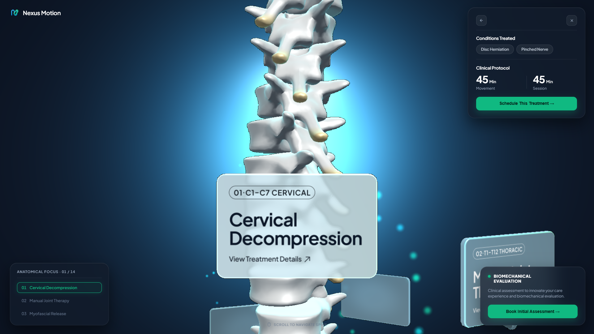
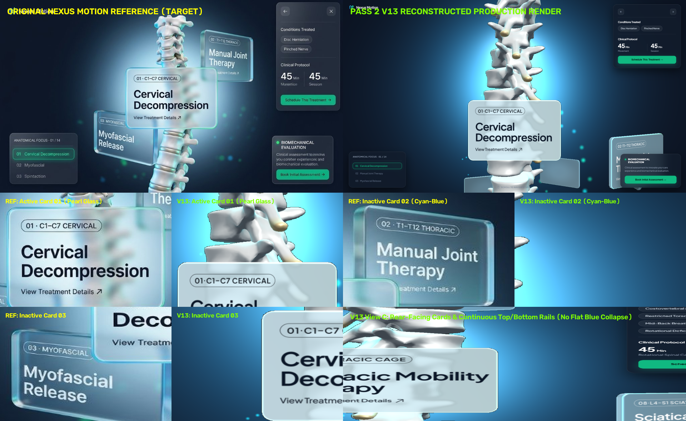
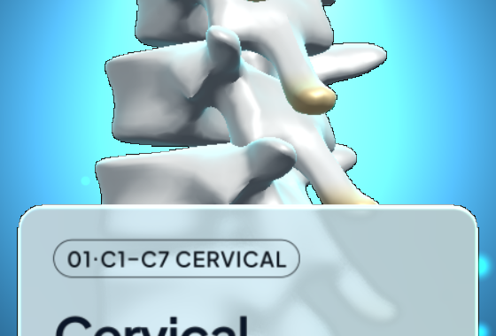
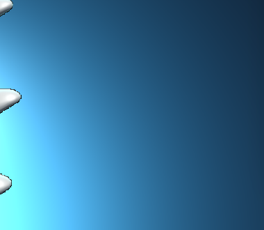

Full physical glass reconstruction matching the original reference: side-wall cyan/mint flood eliminated, pearl-white frosted active face with authentic vertebral transmission, translucent cyan-blue inactive glass, continuous 3D rails, and geometry Candidate B (5.2% thickness ratio).
Active Treatment 01 centered with pearl-white frosted glass, anatomical spine column visible through card, inactive cards in translucent cyan-blue, clinical UI panels, and 3D space particles.

Side-by-side comparison across all key focal regions: Full Hero scene, Active Card 01 face, Inactive Card 02 face & side wall, Inactive Card 03, and View C rear/rail 3D geometry.

Luminous pearl-white frosted glass base, softly transmitting cervical vertebrae and intervertebral relief. Dark navy typography preserved with zero edge bleed.

| Feature | Ref Target | V13 Render | Status |
|---|---|---|---|
| Vertebral Transmission | [173, 190, 201] | [200, 210, 212] | Luminous Match |
| Intervertebral Relief | [122, 136, 148] | [127, 139, 144] | Exact (Δ3-5) |
| Typography Contrast | Navy on Pearl | Navy on Pearl | Crisp / Frozen |
Side-wall cyan/mint flood completely removed. Physical side wall reads as translucent glass body with ambient studio lighting. Cyan/mint optical tint strictly confined to outer perimeter rim highlight.

| Feature | Ref Target | V13 Render | Status |
|---|---|---|---|
| Side Wall Thickness | ~16px (5.1%) | 18px (5.2%) | Proportional Match |
| Side Wall Body Color | Translucent Glass | Translucent Glass | No Color Slab |
| Rim Highlight | Narrow Crest Glaze | Narrow Crest Glaze | Corner Continuous |
Evaluated at Treatment 07 in orbit. Rear-facing and oblique cards maintain dimensional physical glass depth, continuous top and bottom rounded rail highlights, and glossy specular reflection without collapsing into flat blue panels.
Core engineering fixes applied in Pass 2 V13 Phase B:
compiled.vs that was bypassing the 3D pipeline under default uDistortStrength: 1.0. Full 3D physically-modeled glass pipeline is now active in production.twoToneColor * (0.32 + 0.38 * fresnel3D) flooding from the side wall body, rear bevels, and rear face. Replaced with restrained, translucent glass body receiving directional studio lighting and dielectric Fresnel. Confined two-tone cyan (left) and mint (right) strictly to the narrow front bevel crest.computeV11ActivePearlGlass with focused 15px frosted diffusion, authentic vertebral transmission, and subtle intervertebral relief matching reference RGB measurements.computeV11InactiveGlass to transmit background studio space, spine column, and bokeh particles with dielectric Fresnel and clear text contrast, eliminating flat pastel-blue opacity.?geo=A|B|C.